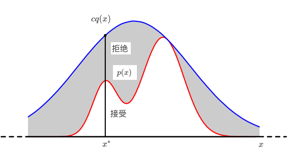
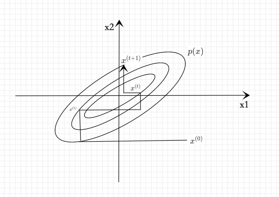
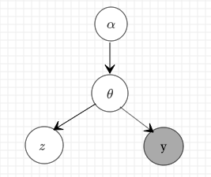

蒙特卡罗法(Monte Carlo method)，也称为统计模拟方法，是通过从概率模型的随机抽样进行近似数值计算的方法。
马尔可夫链蒙特卡罗法(MCMC)，则是以马尔可夫链为概率模型的蒙特卡罗法。
马尔可夫链蒙特卡罗法构建一个马尔可夫链，首先基于该马尔可夫链进行随机游走，产生样本的序列，然后使用该平稳分布的样本进行近似数值计算。
Metropolis-Hastings算法是最基本的马尔可夫链蒙特卡罗法。
吉布斯抽样(Gibbs sampling)是更简单、使用更广泛的马尔可夫链蒙特卡罗法。
马尔可夫链蒙特卡罗法被应用于概率分布的估计、定积分的近似计算、最优化问题的近似求解等问提，特别是被应用于统计学习中概率模型的学习与推理，是重要的统计学习计算方法。
蒙特卡罗法
本节介绍蒙特卡罗法在随机抽样、数学期望估计、定积分计算的应用。
马尔可夫链蒙特卡罗法是蒙特卡罗法的一种方法。
随机抽样
蒙特卡罗法要解决的问题是：假设概率分布的定义已知，通过抽样获得概率分布的随机样本，并通过得到的随机样本对概率分布的特征进行分析。比如，从样本得到经验分布，从而估计总体分布；或者从样本计算出样本均值，从而估计总体期望。所以，蒙特卡罗法的核心是随机抽样。
一般的蒙特卡罗法有直接抽样法、接受-拒绝抽样法、重要性抽样法等。
接受-拒绝抽样法、重要性抽样法适合于概率密度函数复杂(如密度函数含有多个变量，各变量互相不独立，密度函数形式复杂)，不能直接抽样的情况。
以接受-拒绝抽样法(accept-reject sampling method)为例。假设有随机变量x，取值，其概率密度函数为。目标是得到该概率分布的随机样本，以对这个概率分布进行分析。
基本想法：假设p(x)不可以直接抽样。找一个可以直接抽样的分布，称为建议分布(proposal distribution)。假设q(x)是建议分布的概率密度函数，并且有q(x)的c倍一定大于等于p(x)，其中c>0。如下图所示：

按照q(x)进行抽样，假设得到结果是，在按照的比例随机决定是否接受。直观上，落到范围内就接受(绿色)，落到范围外就拒绝(红色)。接受-拒绝法实际上是按照p(x)的涵盖面积(或涵盖体积)占cq(x)的涵盖面积(或涵盖体积)的比例进行抽样。
算法19.1 (接受-拒绝法)
输入：抽样的目标概率分布的概率密度函数p(x)
输出：概率分布的随机样本
参数：样本数n
- 选择概率密度函数为q(x)的概率分布，作为建议分布，使其对任一x满足，其中c>0。
- 按照建议分布q(x)随机抽样得到样本，在按照均匀分布在(0,1)范围内抽样得到u。
- 如果，则将作为抽样结果；否则，回到步骤(2)。
- 直至得到n个随机样本，结束。
接受-拒接法的优点是容易实现，缺点是效率不高。如果p(x)的涵盖面积(或涵盖体积)占cq(x)的涵盖面积(或涵盖体积)的比例很低时，会导致拒绝的比例很高，抽样效率很低。
数学期望估计
假设有随机变量x，取值，其概率密度函数为p(x)，f(x)为定义在上的函数，目标是求函数f(x)关于密度函数p(x)的数学期望。
针对这个问题，蒙特卡罗法按照概率分布p(x)独立的抽取n个样本，之后计算函数f(x)的样本均值。
作为数学期望的近似值。
根据大数定律可知，当样本容量增大时，样本均值以概率1收敛于数学期望：
因此，得到数学期望的近似计算方法：
积分计算
应用在定积分的近似计算上的蒙特卡罗法，也称为蒙特卡罗积分。
假设有一个函数h(x)，目标是计算函数的积分：
如果能够将函数h(x)分解成一个函数f(x)和一个概率密度函数p(x)的乘积的形式，那么就有：
于是，函数h(x)的积分可以表示为函数f(x)关于概率密度函数p(x)的数学期望。
实际上，给定一个概率密度函数p(x)，只要取，就可以得式(19-4)。也就是说，任何一个函数的积分都可以表示为某一个函数的数学期望的形式。而函数的数学期望又可以通过函数的样本均值估计。于是，就可以利用样本均值来近似计算积分。这就是蒙特卡罗积分的基本想法：
马尔可夫链
基本定义
定义19.1(马尔可夫链) 考虑一个随机变量的序列，这里表示时刻t的随机变量，t=1,2,…。每个随机变量的取值集合相同，称为状态空间，表示为S，随机变量可以是离散的，也可以是连续的。以上随机变量的序列构成随机过程(stochastic process)。
假设在时刻0的随机变量遵循概率分布，称为初始化状态分布。在某个时刻的随机变量与前一个时刻的随机变量之间有条件分布，如果只依赖于，而不依赖于过去的随机变量，这一性质称为马尔可夫性，即
具有马尔可夫的随机序列称为马尔可夫链，或马尔可夫过程。
条件概率分布称为马尔可夫链的转移概率分布。转移概率分布决定了马尔可夫链的特性。
马尔可夫性的直观解释是：未来只依赖于现在(假设现在已知)，而与过去无关。
若转移概率分布与t无关，即:
则称该马尔可夫链为时间齐次的马尔可夫链。
n阶马尔可夫链，满足n阶马尔可夫性(对照一阶马尔可夫性(19-6))：
本书中提到的马尔可夫链都是时间齐次的，且只考虑一阶马尔可夫链。
容易验证n阶马尔可夫链可以转换为一阶马尔可夫链。
离散状态马尔可夫链
转移概率矩阵和状态分布
离散状态马尔可夫链，随机变量定义在离散空间S，转移概率分布可以由矩阵表示。
若马尔可夫链在时刻(t-1)处于状态j，在时刻t移动到状态i，将转移概率记作:
满足
马尔可夫链的转移概率可以由矩阵表示，即：
称为马尔可夫链的转移概率矩阵，转移概率矩阵P满足条件。满足这两个条件的矩阵称为随机矩阵。
考虑马尔可夫链在时刻的概率分布，称为时刻t的概率分布，记作：
其中表示时刻t状态为i的概率，
特别地，马尔可夫链的初始状态分布可以表示为：
其中表示时刻0状态为i的概率。通常初始分布的向量只有一个分量是1，其余分量都是0，表示马尔可夫链从一个具体状态开始*。
有限离散状态的马尔可夫链可以由有向图表示。结点表示状态，边表示状态之间的转移，边上的数值表示转移概率。从一个初始状态出发，根据有向边上定义的概率在状态之间的随机跳转(或随机转移)，就可以产生状态的序列。
马尔可夫链实际上是刻画随时间在状态之间转移的模型，假设未来的转移状态只依赖于现在的状态，而与过去的状态无关。
平稳分布
定义19.2(平稳分布) 设有马尔可夫链，其状态空间为S，转移概率矩阵为，如果存在状态空间S上的一个分布：
使得
则称为马尔可夫链的平稳分布。
直观上，如果马尔可夫链的平稳分布存在，那么以该平稳分布作为初始分布，面向未来进行随机状态转移，之后任何一个时刻的状态分布都是该平稳分布。
引理19.1 给定一个马尔可夫链，状态空间为S，转移概率矩阵为，则分布为X的平稳分布的充分必要条件是是下列方程组的解：
证明：
必要性。
假设是平稳分布，显然满足式(19-17)和式(19-18)，又根据平稳分布的定义，可得：
即满足式(19-16)。
充分性。
由式(19-17)和式(19-18)知是一概率分布。假设为的分布，则：
同时也为的分布。事实上这对任意t成立。所以是马尔可夫链的平稳分布。
引理19.1给出一个求马尔可夫链平稳分布的方法
连续状态马尔可夫链
连续状态马尔可夫链，随机变量定义在连续状态空间S，转移概率分布由概率转移核伙转移核(transition kernel)表示。
设S是连续状态空间，对任意的，转移核定义为：
其中是概率密度函数，满足。转移核P(x,A)表示从的转移概率：
有时，也将概率密度函数称为转移核。
若马尔可夫链的状态空间S 上概率分布满足条件：
则称分布为该马尔可夫链的平稳分布。等价的：
或简写为：
马尔可夫链的性质
以下为离散状态马尔可夫链的性质。
不可约
定义19.3(不可约) 设有马尔可夫链，状态空间为S，对于任意状态，如果存在一个时刻 t(t>0)满足：
也就是说，时刻0从状态j出发，时刻t到达状态i的概率大于0，则称此马尔可夫链X是不可约的，否则称马尔可夫链是可约的。
直观上，一个不可约的马尔可夫链，从任意状态出发，当经过充分长时间后，可以到达任意状态。
非周期
定义19.4(非周期) 设有马尔可夫链，状态空间为S,对于任意状态，如果从时刻0从状态i出发，时刻t返回状态i的所有时间长的最大公约数是1，则称此马尔可夫链X是非周期的，否则称马尔可夫链是周期的。
直观上，一个非周期性的马尔可夫链，不存在一个状态，从这一个状态出发，再返回到这个状态时所经历的时间长呈一定的周期性。
定理19.2 不可约且非周期的有限状态马尔可夫链，有唯一平稳分布存在。
正常返(positive recurrent)
定义19.5(正常返) 设有马尔可夫链，状态空间为S，对于任意状态，定义概率为时刻0从状态j出发，时刻t首次转移到状态i的概率，即。若对所有状态i,j都满足，则称马尔可夫链X是正常返(positive recurrent)的。
直观上，一个正常返的马尔可夫链，其中任意一个状态，从其它任意一个状态出发，当时间趋于无穷时，首次转移到这个状态的概率不为0。
当时间趋于无穷时，转移到任意一个状态的概率不为0，马尔可夫链是正常返的。
当时，不存在平稳分布，马尔可夫链不是正常返的。
定理19.3 不可约、非周期且正常返的马尔可夫链，有唯一平稳分布存在。
遍历定理
定理19.4(遍历定理) 设有马尔可夫链，状态空间为S，若马尔可夫链X是不可约、非周期且正常返的，则该马尔可夫链有唯一平稳分布，并且转移概率的极限分布是马尔可夫链的平稳分布。
若f(X)是定义在状态空间上的函数，，则
其中，是f(X)关于平稳分布的数学期望，式(19-26)表示：
几乎处处成立或以概率1成立。
直观上，满足相应条件的马尔可夫链，当时间趋于无穷时，马尔可夫链的状态分布趋近于平稳分布。
随机变量的函数的样本均值以概率1收敛于该函数的数学期望。
样本均值可以认为是时间均值，而数学期望是空间均值。
遍历定理表示了遍历性的含义：当时间趋于无穷时，时间均值等于空间均值。
遍历定理的三个条件：不可约、非周期、正常返，保证了当时间趋于无穷时达到任意一个状态的概率不为0.
在实际应用遍历原理时，取一个足够大的整数m，经过m次迭代之后认为状态分布就是平稳分布，这时计算从m+1次迭代到第n次迭代的均值，即：
称为遍历均值。
可逆马尔可夫链
定义19.6(可逆马尔可夫链) 设有马尔可夫链，状态空间为S，转移概率矩阵为P，如果有状态分布，对于任意状态，对任意一个时刻t满足：
或简写为
则称此马尔可夫链X为可逆马尔可夫链，式(19-30)称为细致平衡方程(detail balance equation)。
直观上，如果有可逆的马尔可夫链，那么以该马尔可夫链的平稳分布作为初始分布，进行随机状态转移，无论是面向未来还是面向过去，任何一个时刻的状态分布都是该平稳分布。
定理19.5(细致平衡方程) 满足细致平衡方程的状态分布就是该马尔可夫链的平稳分布，即
证明：
定理19.5说明，可逆马尔可夫链一定有唯一平稳分布，给出了一个马尔可夫链有平稳分布的充分条件(不是必要条件)。也就是说，可逆马尔可夫链满足遍历定理19.4的条件。
马尔可夫链蒙特卡罗法
基本想法
假设多元随机变量x，满足，其概率密度函数为p(x)，f(x)为定义在上的函数，目标是获得概率分布p(x)的样本集合，以及求函数f(x)的数学期望。
应用马尔可夫链蒙特卡罗法解决这个问题：在随机变量x的状态空间S上定义一个满足遍历定理的马尔可夫链，使其平稳分布就是抽样的目标分布p(x)。然后，在这个马尔可夫链上进行随机游走，每个时刻得到一个样本。根据遍历定理，当时间趋于无穷时，样本的分布趋近平稳分布，样本的函数均值趋近于函数的数学期望。所以，**当时间足够长时(时刻大于某个正整数m)，在之后的时间(时刻小于等于某个正整数n,n>m)里随机游走得到的样本集合就是目标概率分布的抽样结果，得到的函数均值(遍历均值)就是要计算的数学期望值:
到i时刻m为止的时间段称为燃烧期。
基本步骤
首先，在随机变量x的状态空间S上构造一个满足遍历定理的马尔可夫链，使其平稳分布为目标分布p(x)
从状态空间的某一点出发，用构造的马尔可夫链进行随机游走，产生样本序列。
应用马尔可夫链的遍历定理，确定正整数m和n，(m<n)，得到样本集合${x{m+1},x{m+1},\dots,x_n}$，求得函数f(x)的均值(遍历均值)
就是马尔可夫链蒙特卡罗法的计算公式。
这里有几个重要问题：
- 如何定义马尔可夫链，保证马尔可夫链蒙特卡罗法的条件成立
- 如何确定收敛步数m，保证样本抽样的无偏性
- 如何确定迭代步数n，保证遍历均值计算的精度
马尔可夫链蒙特卡罗法与统计学习
假设观测数据由随机变量表示，模型由随机变量表示，贝叶斯学习通过贝叶斯定理计算给定数据条件下模型的后验概率，并选择后验概率最大的模型。
后验概率：
贝叶斯学习中经常需要进行三种积分运算：规范化(normalization)，边缘化，数学期望。
后验概率计算中需要规范化计算：
如果有隐变量，后验概率的计算需要边缘化计算：
如果有一个函数f(x)，可以计算该函数的关于后验概率分布的数学期望：
当观测数据和模型都很复杂的时候，以上积分计算会变得困难。而马尔可夫链蒙特卡罗法为这些计算提供了一个通用的有效解决方案。
Metropolis-Hastings算法
Metropolis-Hastings是马尔可夫链蒙特卡罗法的代表算法。
基本原理
马尔可夫链
假设要抽样的概率分布为p(x)。Metropolis-Hastings算法采用转移核为的马尔可夫链：
其中和分别称为建议分布(proposal distribution)和接受分布(acceptance distribution)。
建议分布 是另一个马尔可夫链的转移核，并且是不可约的，即其概率值恒不为0，同时是一个容易抽样的分布。
接受分布是
这时转移核可以写成
转移核为的马尔可夫链上的随机游走以以下方式进行。
如果在时刻(t-1)处于状态x,即，则先按建议分布抽样产生一个候选状态，然后按照接受分布抽样决定是否接受状态。以概率接受，决定时刻t转移到状态，而以概率拒绝，决定时刻t仍停留在状态x。
具体地，在区间(0,1)上的均匀分布中抽取一个随机数u，决定时刻t的状态：
可以证明，转移核为的马尔可夫链是可逆马尔可夫链(满足遍历原理)，其平稳分布就是p(x)，即要抽样的目标分布。
定理19.6 由转移核(19-38)~(19-40)构成的马尔可夫链是可逆的，即
并且p(x)是该马尔可夫链的平稳分布。
证明：若，则式(19-41)显然成立。
设，则
式(19-41)成立。
由式(19-41)知，
依据平稳分布的定义(19-21)，p(x)是马尔可夫链的平稳分布。
建议分布
建议分布有多种可能的形式，这里介绍两种常用形式：
第一种形式：假设建议分布是对称的，即对任意的x和 有
这样的建议分布称为Metropolis选择，也是Metropolis-Hastings算法最初采用的建议分布。这时，接受分布简化为：
Metropolis选择的一个特例是取条件概率分布，定义为多元正态分布，其均值为x，其协方差矩阵是常数矩阵。
Metropolis选择的另一个特例是令，这时算法称为随机游走Metropolis算法。例如，
Metropolis选择的特点是当与x接近时，的概率值高，否则的概率值低。状态转移在附近点的可能性更大。
第二种形式：独立抽样。假设与当前状态x无关，即。建议分布的计算按照独立抽样进行。此时，接受分布可以写成:
其中，。
独立抽样实现简单，但通常收敛速度慢，通常选择接近目标分布p(x)的分布作为建议分布q(x)。
满条件分布
马尔可夫链蒙特卡罗法的目标分布通常是多元联合概率分布，其中为k维随机变量。如果条件概率分布中所有k个变量全部出现，其中，那么称这种条件概率分布为满条件分布(full conditional distribution)。
满条件分布有以下性质：对任意的和任意的，有：
而且，对任意的和任意的，有：
Metropolis-Hastings算法中，可以利用性质(19-46)，简化计算，提高计算效率。
具体地，通过满条件分布概率的比计算联合概率的比，而前者更容易计算。
Metropolis-Hastings算法
算法19.2(Metropolis-Hastings算法)
输入：抽样的目标分布的密度函数p(x)，函数f(x)；
输出：p(x)的随机样本，函数样本均值；
参数：收敛步数m，迭代步数n。
任意选择一个初始值
对i=1,2,…,n循环执行
设状态，按照建议分布随机抽取一个候选状态。
计算接受概率
从区间(0,1)中按均匀分布随机抽取一个数u。
若，则状态；否则，状态。
得到样本集合
计算
单分量Metropolis-Hastings算法
在Metropolis-Hastings算法中，通常需要对多元变量分布进行抽样，有时对多元变量分布的抽样是困难的。因此，可以对多元变量的每一变量的条件分布依次分别进行抽样，从而实现对整个多元变量的一次抽样，这种方法叫做单分量Metropolis-Hastings算法。
假设马尔可夫链的状态由k维随机变量表示：
其中表示随机变量x的第j个分量，j=1,2,…,k，而表示马尔可夫链在时刻i的状态:
其中是随机变量的第j个分量，j=1,2,…,k。
单分量Metropolis-Hastings算法由下面的k步迭代实现Metropolis-Hastings算法的一次迭代：
设在第(i-1)次迭代结束时分量的取值为，在第i次迭代的第j步，对分量根据Metropolis-Hastings算法更新，得到其新的取值。
首先，由建议分布抽样产生分量的候选值，这里表示在第i次迭代的第(j-1)步后的除去的所有值，即：
其中分量1,2,…,j-1已经更新。
然后，按照接受概率：
抽样决定是否接受候选值。如果被接受，则令；否则令。其余分量在第j步不改变。马尔可夫链的转移概率为：
下图显示了单分量Metropolis-Hastings算法的迭代过程：

目标是对二元随机变量x进行抽样。如果变量或更新，那么在水平或垂直方向上产生一个移动，连续水平和垂直移动产生一个新的样本点。
注意：由于建议分布可能不被接受，Metropolis-Hastings算法可能在一些相邻的时刻不产生移动。
吉布斯抽样(Gibbs sampling)
吉布斯抽样可认为是Metropolis-Hastings算法的特殊情况，更容易实现，且被广泛使用。
基本原理
吉布斯抽样(Gibbs sampling)用于多元变量联合分布的抽样和估计。其基本做法是，从联合概率分布定义满条件概率分布，依次对满条件概率分布进行抽样，得到样本的序列。(这样的抽样过程是在一个马尔可夫链上的随机游走，每一个样本对应着马尔可夫链的状态，平稳分布就是目标的联合分布)。整体成为一个马尔可夫链蒙特卡罗法，燃烧期之后的样本就是联合分布的随机样本。
假设多元变量的联合概率分布为。吉布斯抽样从一个初始样本出发，不断进行迭代，每一次迭代得到联合分布的一个样本。最终得到样本序列。
在每次迭代中，依次对k个随机变量中的一个变量进行随机抽样。
如果在第i次迭代中，对第j个变量进行随机抽样，那么抽样的分布是满条件概率分布，这里表示第i次迭代中，变量j以外的其它变量。
设在第(i-1)步得到样本，在第i步，首先对第一个变量按照以下满条件概率分布随机抽样：
得到，之后依次对第j个变量按照以下满条件概率分布随机抽样：
得到，最后对第k个变量按照以下满条件概率分布随机抽样：
得到，于是得到整体样本。
吉布斯抽样是单分量Metropolis-Hastings算法的特殊情况。
定义建议分布是当前变量，j=1,2,…,k的满条件概率分布:
这时，接受概率，
这里用到 和。
转移核就是满条件概率分布：
也就是说，依次按照单变量的满条件概率分布进行随机抽样，就能实现单分量Metropolis-Hastings算法。吉布斯抽样对每次抽样的结果都接受，没有拒绝，这一点和一般的Metropolis-Hastings算法不同。
这里，假设满条件概率分布不为0，即马尔可夫链是不可约的。
吉布斯抽样算法
算法19.3(吉布斯抽样)
输入：目标概率分布的密度函数p(x)，函数f(x)
输出：p(x)的随机样本，函数样本均值；
参数：收敛步数m，迭代步数n。
初始化。给出初始样本。
对i循环执行
设第i-1次迭代结束时的样本为，则第i次迭代进行如下几步操作：
(1)由满条件分布抽取
(j)由满条件分布抽取
(k)由满条件分布抽取
得到第i次迭代值。
得到 样本集合
计算
抽样计算
以贝叶斯学习为例介绍吉布斯抽样这个技巧。
设y表示观测数据,分别表示超参数、模型参数、未观测数据，，它们的依赖关系如下图所示：

贝叶斯学习的目的是估计后验概率分布，求后验概率最大的模型。
式中是超参数分布,是先验分布，是完全数据的分布。
现在用吉布斯抽样估计，其中y已知,未知。吉布斯抽样中各个变量的满条件分布有以下关系：
其中表示变量以外的所有变量,和类似。
满条件概率分布于若干条件概率分布的乘积成正比，各个条件概率分布只由少量的相关变量组成(图模型中相邻结点表示的变量)。
所以，依满条件概率分布的抽样可以通过依这些条件概率分布的乘积的抽样进行。这样可以大幅减少抽样的计算复杂度，因为计算只涉及部分变量。